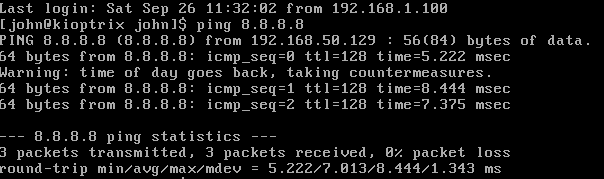

we will use login:john and
passwd:TwoCows2
basically we will not login the machine we will rather attack the machine through kali apna
when pinged the machine

192.168.50.129 is my kioptrix ip address hi
(thus kioptrix machine ka ip mila na )
now see kali ka ip adress
192.168.50.128 hai

do arp-scan -l
and u get following results(search for vmware wale results)

thus aise bhi kioptrix ka ip address mil sakta hai na
so we had 2 methods na directly by kioptrix login or by arp scan
next method is :
another method for getting ip address of kioptrix
USING NETDISCOVER:(we will sweep entire subnet of /24)
typed :netdiscover -r 192.168.50.0/24

aisa aaya ignore 1st 2 coz they dont look similar to kali ka ip address
and last one ko bhi leave that is like bandwith id na
so only left is
192.168.50.129
which is ip address that we will attack
just like tcp handshake of syn synack ack
we will use nmap (network mapper)
will scan for open ports and services
(process used is stealth scanning)
used to be written like:nmap -sS now its done by default
was called stealth coz it wasnt detectable bt now most areas with good security can detect it
bt it still work s many times(80 percent)
stealthscan does
syn synack rst
means when connection accepted u just say reset flag
means we dont establish a connection.
Due to this we arent making a connection bt we are identifying them as open
cz we arent making conncection with them hence its called stealthy
we type:
nmap -T4 -p- -A
(u ve speed between 1 and 5,1 is slow and 5 is fast)
so used 4 (author's preference even in hackthebox)
-p- means i wanna scan all ports
if u just wrote nmap - T4 -A
(then it would scan just top 1000 ports)
coz total ports is 65535 na we wanna scan every port na
if u just wanted to scan web server u could have written
nmap -T4 -p 80,443 -A (if even wanna scan for dns use port 53)
-A means everythong means u want version info ,os ,fingerprinting,system info etc

typed in new tab nmap --help

-Pn means even if host not responding to your ping u treat him as if he is online(even if they arent responding to your ping requests u still wannna ping them)
-sn is also good for scanning all the ports
the 2 most comon scans we will use is

sS and sU used 99 % of the time
sS - is our stealth scan hi
sU is for udp
so in new tab write nmap -sU -T4 -p 192.168.50.129
(the order of these sU,T4, p and all doesnt really matter)
removed -A coz it takes a long time to scan
and only considering top 1000 ports
(coz udp takes a long time ti scan coz its connection less protocol it doesnt have instance response time)
meanwhile reuslts aaye

it took so long, instead do nmap without -A and once u get the ports like in pic above 22/tcp, 80/tcp and so on sirf vohi ports pe do nmap with -A
(like instead of going to every single port and attempting to get every info by this method we will extract full info from these ports hi)
we see in above pic port 22 open and ssh is running there
apache is runnig on port 80 and port 443
at itmes these scans also give u the os running bt that is percentage like could be 80 percent that machine running kali
THUS SCANNING COMPLETE
now we will attack certain ports and exploits dhundenge